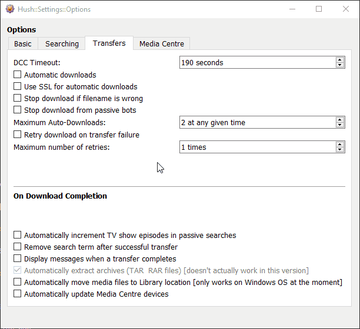

The Options window has a Transfers tab which lists options and functions related to transfers with Hush. See the animation below to see the current options.

The DCC Timeout option lets you alter the timeout value for DCC transfers. The recommended value is 190 seconds. Note: this setting directly alters the KVIrc global DCC Timeout value found in Settings -& Configure KVIrc -> DCC -> Advanced.
The Automatic Downloads option toggles whether Hush will automatically download content when a passive search finds matching results from your Searches list. You can leave this unticked and Hush will still find content for you and you can manually decide what to download by clicking the choices in the Found Content Window.
The Use SSL for Automatic Downloads option decides whether Automatic Downloads will be requested via SSLDCC or not. Note that not many channels support SSLDCC transfers so the recommended setting for this is unticked if you use Hush to download from numerous channels.
The Stop download if filename is wrong option toggles whether Hush will stop a download if it detects the filename is incorrect. A bot can send an incoorect file if enough time elapses between when the pack announce data was harvested and when the file is requested. The bot's file serving software can reassign pack numbers and this is what causes you to be sent an incorrect file.
The Stop download from passive bots option toggles whether Hush will stop a download if it thinks a passive bot is sending the file. Passive transfers are detected by looking at hte port number of the transfer. If it is port 0 this option will cancel the transfer automatically. Passive bots/transfers only work if you configure KVIrc and your router correctly to deal with them.
The Maximum Auto-Downloads option defines how many simultaneous automatic downloads Hush will create. Manual downloads are not counted towards this total.
The Retry download on transfer failure option toggles whether downloads should be retried if they fail to transfer completely. This applies to all downloads. (I think)
The Maximum number of retries option defines how many retries will be attempted. Note: the initial download attempt is not counted as a "retry". If you set this value to 1, the file will try to download a total of 2 times (1 initial attempt, 1 retry). You should limit the number of retries as it could possibly block up a bot for other users and might get you in trouble or banned! Recommended maximum value is 3.
The Automatically increment TV show episodes in passive searches option toggles whether Hush will automatically increment the episode value in the search term when a TV episode download completes successfully.
This option, in short, makes Hush act like a TV episode subscription service. An example: you found a TV show you like and want to keep watching. Let's call this show "The Cool Ten". Tick this option so it is activated. Now go to Searches and create a search term that will find the next (or first) episode for you. You would add something like: *the.cool.ten.s01e01*720*mkv* as a search term to the Searches list.
When Hush finds a match for that search and a download (could be an auto or manual download) of a matching file successfully completes, Hush will detect it just downloaded a TV episode and it will alter the search term to become: *the.cool.ten.s01e02*720*mkv* automatically, ready for the next episode to become available.
This option also allows you to traverse a season of a show and try to download all the episodes in succession if they are available.
The Remove search term after successful transfer option toggles whether a search term should be removed after a file has been successfully downloaded for the search term. Note that this opton will not be applied to search terms deemed to be TV episodes if the Automatically increment TV show episodes in passive searches option is ticked. This option is recommended to be ticked.
The Display messages when a transfer completes option toggles whether a message will be shown in the Found Content Window when a transfer completes.
The Automatically move media files to Library location option toggles whether successfully completed transfers that are a supported media type will be moved into their Location as designated by the Library settings. At time of writing (v0.3.9) only Movies and TV Shows media types are supported for this option, only for unpackaged files (ie: not TAR or RAR files), and only on Windows OS.
The Automatically update Media Centre devices option toggles whether your configured Media Centre devices should be notified when a transfer completes successfully.